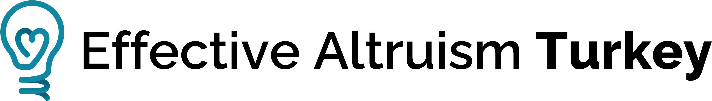
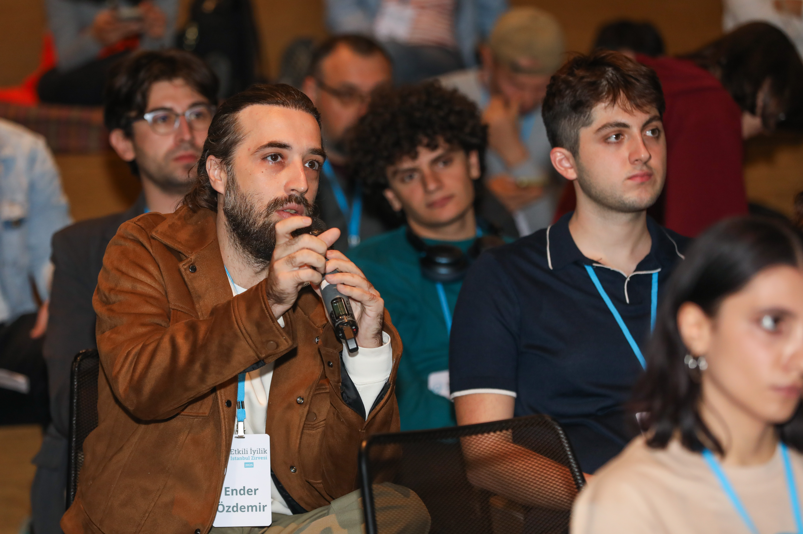

|
 under construction ama sevgiyleDunyanin en acil sorunlari icin daha iyi fikirler, ama 90'lar modem enerjisiyle *Bu sayfa tamamen eglence icin hazirlanmis, canli siteden ayri duran bir nostalji kozesidir. Kanit, akil yurutme ve topluluk fikrini bu kez parlayan basliklar, marquee satirlari ve bol yildizli bir internet kafe estetik diliyle sunuyoruz. Best viewed with Netscape Navigator
1024x768 ruhsal hedef
No plug-ins required
DURUM: Yukleniyor... |
 |
Sevgi dolu bir internet zaman kapsuluEA Turkiye gercekte duz, net ve sakin bir site. Bu mini site ise o fikrin esprili bir yan evreni: gri kutular yerine bevel sinirlar, minimal tipografi yerine Comic Sans cesareti, sakin bir kahraman bolumu yerine ise kosan bir marquee.
|
TOPLAM ZIYARETCI
007200
Sayac bu tarayicida yerel olarak artar. Yani teknik olarak biraz sihir, biraz nostalji. |
Best viewed with: Netscape Navigator, Internet Explorer 5, ya da en azindan bir fincan cay ve sabirli bir modem sesi.
Neler bulacaksin?Toplulugun neyi onemsedigi, neden kanit ve akil yurutmeye vurgu yaptigi, topluluga giris icin en net adimlar ve biraz da gosteri amacli yanip sonen metinler. NEW! Misafir defteri ozelligi su an hayal gucu sunucularinda barindiriliyor. |
Kisa topluluk ozetiKurulus: 2021 Topluluk uyeleri: 300+ Aktif sehirler: 2 Enerji seviyesi: CRT parlakligi kadar yuksek |
"Daha fazla iyilik yapmak icin daha iyi yollar ariyoruz." Buradaki fikir ciddi, sunum ise tamamen internet tarihine sevgili bir selam.